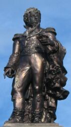
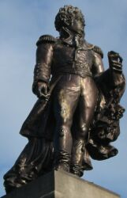

Sculptor: Pierre Alfred Robinet born Paris 1814 - died Paris 1878
runner up in Prix de Rome 1840
exhibited Salon 1835-1877
Moved to Jersey 1870
Recorded in 1871 census living at Colestone on St. Saviour's Road. Described as Sculptor, 51 years old, born in France. Wife, Ensa/Eusa (?), 34, born in Ireland; daughter, Marguerite, 7; son, William, 3; daughter, Emelie, 2, all the children born in France.
"hautement recommandé pour deux bustes en plâtre", Exposition des Iles de la Manche 1871
Cast by A Durenne, Paris
Mercury seated on a rock with anchor (cf. Westaway) holding caduceus and with cornucopia at feet. The athletic pose is reminiscent of Hellenistic art, and must surely have been influenced by Michelangelo's ignudi on the Sistine Chapel ceiling.
Ceres is holding sickle and wheatsheaf.
Don holding scroll (of plans?) in a possible mirror echo of George II. The two statues (George II and Don) are facing each other across Town. George was the only public statue of a person in existence in Jersey at the time Robinet did Don, and it is probable that he consciously patterned his statue after the one the people of Jersey were familiar with. Don has the same sort of scroll, one foot forward and robe hanging down to ground at back as George II, but in mirror image.
The original plan must have been for the sculptures to be lower. Many of the details of the symbolic attributes of Mercury and Ceres are not currently visible from ground level, and yet they are so integral to the iconography of the monument that it must have been intended that they be placed at the base of the monument, not so far elevated. The criticism expressed as to the pose of Mercury, especially, would be mitigated if this dynamic pose were seen to best advantage at eye level.
Don is too elevated for harmonious proportion of the whole. His feet should be placed at, or slightly above, the tops of the heads of Mercury and Ceres. The base should be square, not pyramidal, as can be seen by the upright backs of Mercury and Ceres, and the inelegant gaps between their backs and the base for Don himself.
Although Mercury represents Commerce and Ceres Agriculture, the presence of the anchor and, arguably, the wave-like cornucopia on Mercury's side show that he is intended to represent the sea, and Ceres the land. Ceres' pose is static — like the land, while that of Mercury is fluid and coiled yet langourous — like the sea.
The Don Monument has been given an inauthentic military air by the 20th Century addition of the cannon.
A Debt of Gratitude
A Monument to the Memory of General Don
Under this heading our contemporary the Constitutionnel publishes an article relative to the contemplated erection of a monument to the esteemed memory of the late lamented General Don, who, during the first part of the present century, was universally beloved and respected, while the envoy of the British Government as Lieutenant-Governor of Jersey. His name, the writer believes, has but to be mentioned to recall bright reminiscences of a man who was the island's benefactor; and at the present moment it is observed that a favorable opportunity exists enabling the inhabitants of Jersey to show their admiration and gratitude to his memory by some public token — worthy both of the man whose name they wish to perpetuate and of the island which prospered under his administration. A provisional committee has now been formed, its members being some of the most respectable citizens of this town, and they have had the happy idea of profiting by the presence of M. Pierre Robinet, a sculptor of the French Government from Paris, who has been compelled by circumstances to seek a refuge on our shores. As soon as this gentleman was applied to he at once wished to proffer his services gratuitously, and a specimen of the proposed monument has already been handed over by him to the committee. It is described by our contemporary as being a chef-d'oeuvre in miniature; and he believes that if anything could diminish the pleasure he felt in viewing it, it would be the very great disappointment of not seeing the execution of a monument which he says may be considered as quite unique in regard to grandeur of conception and the beauty and harmony of outline; in fact it would become one of the imperishable glories of the Channel Islands. A subscription is about to be opened to which English, French, and Jerseymen will be requested to contribute; the mite of the poor will be received like the guinea of the rich, and there is no doubt that the necessary sum will soon be obtained, especially with the addition of the contribution of the Governor, Bailiff, and Jurats, together with that of the States. Englishmen will no doubt be glad of the occasion to render the memory of their fellow-countryman still more famous than it is; Jerseymen will not be ungrateful to their benefactor; and natives of France who have been thrown upon our hospitable rock by many a tempest will be grateful to what has been to most of them a second patrie. Our contemporary proceeds to observe that art must in no wise cede its ground to science, and its incontestible superiority must not be sacrificed when such an opportunity as the present is afforded us. That it suffers is true; that it is disdained is possible; and greater interest is evinced in an engine than a painting; a plough is better understood than a poem, and cast-iron meets with greater success than sculptured marble. But our contemporary believes that imperishable monuments always remain so under our eyes. M. Robinet is of the new school founded in France by Pierre Puget; and the article enumerates, among a great many other of his sculptures, the "Frankish Warrior", the "Roman Warrior" (both in the Tuileries); statue in stone of Jean Bullant, architect of the Louvre, and the contemporary of Jean Goujon; ditto of Keller, to whom the Versailles basins are due, (in the Louvre-palace); several groups of bronze and marble figures, together with a good number of historical and ornamental busts and images for churches, such as a statue of St. Peter for Beauvais Cathedral; a Virgin for the high altar of the church at Biénan, &c., &c. It may therefore be considered as a matter of certainty that M. Robinet has not been without some experience in the art of sculpture, and he may possibly add to the above list a chef-d'oeuvre for our own island, if he is duly encouraged to carry out an object so long contemplated, yet from certain circumstances so long delayed.
Jersey Times 7/12/1870
Le Général Don
Projet d'un monument en son honneur, par Monsieur Robinet, sculpteur, élève de Pradier et de David D'Angers.
...Déjà, grâce à l'initiative d'hommes éminents, un sculpteur de Paris, monsieur Robinet, a fait un projet digne en tout de celui qui l'a inspiré.
Car, pour que le marbre et la pierre s'animent, pour leur donner l'âme, la vie, l'immortalité; pour que le bloc rude, informe, devienne homme, Dieu ou héros, il faut avoir l'étincelle sacrée; il faut une volonté qui dompte les entraves énormes que l'on rencontre aux abords de la sculpture, et surtout, il faut une perséverance, dans les études austères qu'exige l'art divin de Phidias et Michel Ange!
Trop souvent on est peintre médiocre pour faire fortune; on n'est jamais sculpteur que par vocation, et, c'est bien un penchant irrésistible qui a fait de Monsieur Robinet un artiste très en renom.
Elève de deux maîtres illustres, Pradier et David D'Angers, M. Robinet a suivi leurs traces. Comme l'un (Pradier) il a la grâce, l'aisance, la flexibilité, l'heureuse harmonie de formes jeunes et charmantes, ce que volontiers nous appelerions les fantaisies, les caprices de la statuaire. Mais de David D'Angers il tient cet amour, ce respect des traditions sévères et magistrales, qui seul peut maintenir l'artiste dans les hauteurs calmes et sereines, où trône la beauté, l'idéal, où l'inspiration a toujours des ailes! Aussi, à ses heures perdues, si Robinet a peuplé les salons d'oeuvres ravissantes, si toutes les célébrités l'ont sollicité de faire leurs bustes: par de grands et sérieux travaux, il s'est fait une place parmi les sculpteurs de ce temps, et à toutes les expositions des beaux arts, il a mérité les éloges de la critique, et les récompenses du jury. Enfin, ce qui résume et affirme son talent: Il a eu l'honneur d'être un de ceux qui ont peuplé Versailles de demi-Dieux et de héros; plus encore, deux de ses statues sont au Louvre!
Mais ce qui de vieu, constate, le talent de l'artiste, c'est le projet du monument composé en l'honneur du général Don. Et, pour que nous puissions sans arrière-pensée concourir à la souscription patriotique qui va s'ouvrir, et juger l'oeuvre de Monsieur Robinet, Philippe Asplet va photographier le monument, dont les épreuves seront vendues au profit de la souscription.
Chronique de Jersey 10/12/1870
Mercury's cornucopia
The proposal of Mr. VICKERY to erect a monument at the public expense to the memory of General DON was cordially supported and unopposed. We do not think the States misrepresent the public feeling on the point. The services rendered by that Governor have been so long acknowledged with gratitude that it is only just the sentiment should culminate in solid testimony. It is not possible to reward the dead; but it is possible, by acknowledging their merits, to reward the living by anticipation. The exertions of prominent public benefactors are not often substantially requited; but they may be compensated by the reflection of honour paid to their like; and the living may the more cheerfully lend themselves to well-doing by witnessing its abstract appreciation. A people owes public acknowledgments rather to itself than to the subjects of commemoration; and there is no surer way of stimulation future governors to emulate General DON than to mark in a conspicuous and worthy manner the appreciation entertained of that governor's merits. The Committee, to whom the subject is referred, will doubtless give it the prompt and cordial attention it deserves.
British Press and Jersey Times 2/2/1871
 
Etats - seance du 1er Fevrier
Monument au general Don
M. le Depute Vickery... Une occasion qui peut-etre ne se representera jamais, s'offre aujourd'hui aux Etats et a l'ile entiere d'acquitter leur dette sacree envers le general Don. Un sculpteur eminent de Paris - M. Robinet, que le troubles de sa patrie ont engage a venir habiter parmi nous, a prepare le plan d'un monument a la memoire de notre digne Lieutenant-Gouverneur. Ce plan a fait l'admiration de tous ceux qui ont ete admis a le voir. - Je propose donc un projet d'acte, dont je demande le depot au greffe, tendant a la nomination d'un comite et au vote d'une somme d'argent par l'assemblee du Gouverneur, Bailli et Jures pour l'execution de ce monument.
Chronique de Jersey 4/3/1871
This leads us to No. 86 of Art and Industry, Mr. Robinet's bronze medallion, in relief, of Diana resting, with an antlered stag and dog as supports. This is par excellence the finest piece of modelling in the Exhibition. The hand in particular is one of the most perfect we have ever seen; and any one wishing a lesson never to be forgotten has only to compare this with his own digits, or with the hand of any other figure in the building. The fingers are well formed; they are well and variedly disposed, though not forced, and the tout ensemble is clean cut, well distributed, admirably grouped, and in classic keeping. This applies not only to the hand, but to the whole medallion.
We remember seeing at the Palais d'Industrie, in the last exhibition of fine art before the war, a statue by this artist, "La Charmeuse," and we then considered it the gem of that collection. And now, if our purse could spare it, we would have it in marble, as a joy in the house it occupied. We can scarcely say too much in favour of this undoubtedly able artist when in his own particular sphere, but no man is omniscient, and so he makes mistakes like other beings. It is well known that he has beautifully modelled a memorial to General Don, but as it is not publicly exhibited criticism is forbidden. If M. Robinet will permit us to criticise this work, we will do it truly and generously and confine ourselves to fifty lines; and it is much better to be judged by a friend than a foe. But this is our opinion that if it is erected, as it at present is, it will be a life-long sorrow to this great artist, and an eternal regret to the island; because, when erected, it will be criticised by first-class judges whose attention will then be called to it.
British Press and Jersey Times 17/7/1871
Monument Don
Etats - seance du Mercredi 6 Juin 1871
...M. le Depute Vickery donne lecture d'un rapport du Comite nomme par les Etats pour examiner la question d'acquitter la dette de l'Ile envers le general Don, qui fut son Lieutenant-gouverneur et l'un de ses plus grands bienfaiteurs. Ce rapport entre dans de grands details sur le plan du monument adopte par le Comite; il aurait 25 pieds de hauteur, couterait £500 et serait termine dans trois ans.
Chronique de Jersey 10/6/1871
États - Séance du Mercredi 20 Mars 1872
Monument à la Mémoire du Général Don
Le Juge De Quetteville lit le rapport du Comité au sujet d'un monument à élever à la mémoire du Général Don. Trois dessins ont été présentés au Comité par M. Robinet; l'exécution de l'un coûterait £500, le second donnerait lieu a une dépense de £1,000.
Le Député Vickery dit qu'il est convenable de montrer de la reconnaissance envers les bienfaiteurs du pays, et d'honorer la mémoire des hommes auxquels cette île est redevable en grande partie de sa prospérité. Tout le monde doit applaudir à la pensé d'élever un monument à la mémoire du Général Don. Il propose donc qu'une somme de £1,000 soit mise à la disposition du président du comité, pour ériger le monument en question, la moitié de cette somme étant fournie par les Etats et l'autre moitié par l'assemblée des Gouverneur, Bailli et Jurés.
M. le Procureur-Général donne tout son appui au projet et fait un éloge mérité des talents de M. Robinet, sculpteur distingué qui obtint la médaille d'or dans un concours qui eut lieu à Paris il y a deux ans. Il croit que les Etats feront bien de voter la somme demandé, sans adopter l'un ou l'autre des dessins, afin de laisser l'occasion de faire un appel au public pour obtenir £500 par une souscription. Une fois la souscription close, on serait plus à même de pouvoir juger de la grandeur du monument à ériger.....
Nouvelle Chronique de Jersey 23/3/1872
On a souvent dit que la ville de St.-Hélier est pauvre en monuments, et que l'étranger qui visite l'île et ne connaît point son histoire pourrait penser que le pays n'a jamais possédé des hommes dont le souvenir ait mérité d'être conservé. En effet, si nous en exceptons l'obélisque élevé dans Broad-street à la mémoire de PIERRE LE SUEUR rien ne peut attester que Jersey ait eu des fonctionnaires publics qui se soient dévoués à ses intérêts matériaux et moraux. Il n'est donc pas, nous le supposons, une seule personne dans cette île qui n'applaudira au projet d'élever dans un lieu marquant de la ville, un monument à la mémoire du Général DON, qui fut le premier à faire comprendre aux habitants de cette île les avantages d'avoir de belles et larges voies de communication d'un bout du pays à l'autre. Malgré toute l'opposition qu'il rencontra de la part des habitants, malgré les nombreux obstacles qui lui furent suscités, et qui auraient refuté tout autre que lui, le Général DON persista à faire percer quelques grandes routes et à poser ainsi les bases certaines de la prospérité future de Jersey. Que serait, en effet, cette île sans les belles routes qui permettent de circuler librement dans toutes les parties du pays et de transporter facilement tous les produits agricoles destinés à l'exportation? Le Général DON prévoyait déjà les avantages à tirer de bonnes voies de communication: il était, comme l'a très-bien observé le Connétable de St.-HÉLIER dans la séance législative de Mercredi, un homme supérieur à l'époque où il vivait. Personne ne regrettera donc l'argent qui sera consacré à honorer sa mémoire par un monument digne des services qu'il a rendus au pays. Mais, nous l'avouerons, nous eussions désiré que cette initiative de cette oeuvre de reconnaissance eût pris naissance au sein de la population, et cela pour deux raisons: d'abord, parce qu'un monument élevé par souscription publique serait une expression plus directe et plus réelle des sentiments du pays; et ensuite, parce que, en présence des énormes sommes d'argent qui ont été votées récemment par les États, le moment était au moins inopportune pour faire cette nouvelle dépense....
Nouvelle Chronique de Jersey 23/3/1872
Monument Don
Le Comite charge de la question si souvent ramenee devant le public - l'erection d'un monument a la memoire du general Don, le createur des grandes routes de l'ile - se reunira aujourd'hui. Esperons qu d'un cote ou de l'autre, la decision sera finale. On sait que les platres servant de moules existent: que l'on hate l'execution de l'oeuvre et qu'au moins cette affaire n'en demeure pas a l'etat de lettre morte.
Chronique de Jersey 10/3/1877
La Statue du Général Don
À la fin de la séance des États, Vendredi dernier, M. le Juge Falle fit observer que l'Assemblée des Gouverneur, Bailli et Jurés avait agréé de payer les £500 par elle promises pou l'érection d'une statue à la mémoire de feu le Général Don, un des Lieut.-Gouverneurs de l'île qui, pendant sa vie, a tant fait pour le pays. Ce paiement ne sera effectué qu'autant que la dite assemblée aura la garantie que le sculpteur et les fondeurs de la statue accompliront l'oeuvre commencée.
Le Comité appointé pour surveiller l'accomplissement du monument a promis que M. le Connétable de St.-Hélier, qui est sur le point de partir pour Paris, se mettrait en rapport avec les fondeurs, et prendrait les mesures, quant à leur paiement. M. le Député Durell ayant fait quelques observations concernant le peu de responsabilité qu'offraient les antécédents de M. Robinet, dont il était, lui le Député, le propriétaire, non payé, à Jersey M. le Connétable de St.-Clément donna quelques explications qui satisfirent à peu près les États, sans cependant rassurer M. le Député Simon qui se livra à quelques plaisanteries faisat bien augurer de son état de santé. Il fut enfin convenu que M. le Connétable de St.-Hélier prendrait, si possible, les mesures nécessaires pour amener à bien cette oeuvre si longtemps et si désagréablement prolongée.
Nouvelle Chronique de Jersey 20/2/1878
États - séance du Mercredi 14 Janvier
Le Monument Don
M. le Juré-Justicier Falle, Président du Comité chargé de la mise à exécution du vote des États par rapport à la statue du général Don, annonce que la statue et les accessoires sont arrivés, et que le Comité attend la décision de l'Assemblée à cet égard.
Chronique de Jersey 17/1/1880
Le Monument Don. - Sans vouloir nous immiscer dans les affaires du Comité chargé de l'érection et du choix du local d'emplacement de ce monument actuellement emmagasiné aux chantiers des Hâvres et Chaussées, nous sera-t-il permis de demander quand il sera permis au public d'admirer cette belle composition tant critiquée et cependant si bien comprise et amenée à si bonne fin!
Chronique de Jersey 31/1/1880
Encore La Collette
Il semble que la mer veuille avoir le dernier mot des malheureux travaux de la Collette. Aussitôt que le vent et la marée s'y prêtent, on est sûr que de nouveaux dommages seront faits. La grande marée de Mercredi dernier avait atteint le chiffre prédit par l'Almanach de la Nouvelle Chronique, 38 pieds 7 pouces. Jeudi matin, la mer aidée par une brise du Sud-Ouest, se soulevait en longues et lourdes vagues qui au plein de la marée déferlèrent avec une force irrésistible sur les travaux et les ateliers construits contre la banque et près du la ligne ferrée: fenetres, portes, rails en fer, clôtures, tout dut céder et les galets énormes, par centaines de tonneaux, étaient jetés sur ce terrain; les rails étaient tordus et arrachés avec violence, un bateau sous un hangar était réduit en minces éclats, rien ne résistait à ce poids énorme de vagues. L'atelier dont les portes et les fenêtres ont été enfoncées, renfermait la statue du Général Don! Que sont devenus les membres du noble guerrier? Ces membres sont-ils épars et les traits de l'un des grands hommes qui ont laissé d'heureuses traces de leur passage dans l'île, ces traits sont-ils méconnaissables ou enfouis sous une couche de galets et de gravier? Nous n'en savons rien; le public n'est pas admis. Les machines, les engins, tout ce qui était sous les hangars et dans ces ateliers ont subi des dommages, sans doute, ne serait-ce que le contact de l'eau de mer. Malheureuse Collette! Jusques à quand resteras-tu dans cet état de perpétuel danger? — Le Comité des Chaussées le sait, peut-être; — pour nous, nous l'ignorons.
Nouvelle Chronique de Jersey 14/2/1880
Le Général Don. — On vient d'élever une sorte de représentation de la Statue du Général Don, sur la Parade. C'est une simple section en bois, de la hauteur et de la largeur du monument. Nous ne savions pas quaux pieds du Général on dût placer deux dames, qui, dos à dos, semblent attendre quelqu'un ou quelque chose. La place choisie est la pelouse la plus rapprochée de Charing-Cross. Cette section de la Parade paraît assez bien choisie, puisque on verra la Statue de quatre routes.
Nouvelle Chronique de Jersey 21/4/1880
Le Monument Don. — Le modèle du Monument Don a été transféré à Snow Hill en face de la gare du Chemin-de-fer de l'Est. Si le bloc de maisons faisant l'encoignure de Snow Hill-Queen Street disparaissait, la statue se verrait de Bath Street. C'est encore une idée.
Chronique de Jersey 15/5/1880
Le Monument Don. — Comme le dit le Bailiff-Chessman, des Cloches de Corneville, le monument Don ou plutôt sa fatale parodie en bois, est continuellement en mouvement. Après avoir occupé les sites les plus extraordinaires, lorsqu'il fut enlevé de la Parade (sa place désignée par tous les hommes de goût), on voulut encore essayer si un autre site plus mal choisi pourrait être trouvé. On a réussi:–épouvantail Don vient d'être placé au-dessous du Pont-à-Bascule, sur le terre-plein qui a été gagné par remplissage sur le vieux port. Ne serait-il possible d'amonceler, d'entasser, d'accumuler sur ces quelques verges de terrain (on ne veut pas y planter quelques arbres, la seule chose raisonnable!) quelques autres monuments ou offices publics? — La statue de la Place-Royale ne se refuserait pas à faire parallèle au Général Don; — les habitants de la Place n'objecteraient pas au départ de ce triste objet qui n'orne pas ce quartier. — C'est là une idée, n'est-ce pas?
Nouvelle Chronique de Jersey 19/5/1880
Ceres' sickle and sheaf
Le Général Don et son Effigie
Lorsque nous reçumes une lettre écrite par quelque esprit signant Don en bronze..., nous ne nous doutions guère que son effigie en bois subirait elle aussi une mésaventure. Lundi matin, ce monument en bois fiché sur la pointe d'un rocher au-dessous du mont, a été renversé par le vent; on assure qu'il ne s'est pas fait du mal. — Mais où va-t-on mettre ce grand Général?
Nouvelle Chronique de Jersey 12/6/1880
Le Général Don à l'Éditeur de la "Nouvelle Chronique"
Observations et objurgations posthumes.
Monsieur — Je ne daterai pas cette lettre et ne vous dirai pas où elle a été écrite: vous comprendrez la raison de ce silence. J'entre de suite en matière: cela prouve que je ne suis plus de ce monde.
Les grands hommes, les hommes qui ont bien mérité de leur patrie, à leur mort, subissent l'une de ces deux alternatives: ou bien ils sont bientôt oubliés et avec eux les services qu'ils on rendus, ou bien une postérité reconnaissante leur vote des témoignages non équivoques d'admiration.
Pendant longtemps, je me suis cru oublié des Jersiais. À vrai dire, je n'en étais guère fâché. Mieux vaut, cent fois mieux vaut l'oubli qu'un traitement aussi humiliant que celui que ma mémoire subit des mains de la population d'une île pour laquelle j'ai tant fait.
Récapitulons sans amertume, mais en toute vérité. Vous ne m'avez pas connu, M. l'Éditeur, je le regrette. Si vous saviez par vous même l'intérêt que je portais aux habitants de Jersey, vous comprendriez combien je suis humilié de ce que j'ai souffert depuis bien des années.
Un groupe d'hommes dignes du nom d'hommes bien pensants, voulurent un jour mettre à exécution un projet souvent mis sur le tapis et souvent oublié. Des hommes occupant une haute position sociale, après avoir vu quelques petits bustes, quelques maquettes en terre, exécutés par un sculpteur Français qui avait pu échapper aux horreurs de la guerre Franco-Prussienne et se réfugier à Jersey, pensèrent à moi. J'ai su ces détails d'une manière qu'il m'est inutile de rapporter.
Ce sculpteur, soutenu par des hommes morts depuis 1871, fut chargé, à grands frais, de préparer un modèle de "ma statue" (c'est drôle de parler de "sa statue!"). On me donna un grand air, une belle pose; on me visita; on m'examina; on retrancha ceci, on supprima cela; un coup d'ébaucoir ici, un peu de remoulage là. L'oeuvre fut achevée. Si je ne revivais pas, au moins assure-t-on que les traits étainet les miens, que les formes m'appartenaient, que la pose m'était habituelle; Ce n'était pas correcte; mais je préférais me taire. L'oeuvre languit cependant. Mon sculpteur n'était ni très actif ni riche. On envoya le modèle à Paris afin que ma statue fut coulée en bronze. L'artiste, vous le savez, monsieur l'Éditeur, mourut à Paris. J'avais coûté cher, très cher. Les Comités se succédaient; on ne me fondait pas; les fonds manquaient! Quel coup, cher monsieur, pour mon amour-propre! On parla même de me désavouer! de m'abandonner comme un chien sans maître... Enfin, à force de réclamations qui de toutes parts tombaient sur la tête du Comité, ma statue fut coulée; il ne s'agissait plus que de l'envoyer à Jersey. C'est étonnant, monsieur l'Éditeur, combien on dépense d'argent pour les grandes routes de l'île de Jersey et combien peu en se prêta aux votes qui étaient destinés à conserver la mémoire de CELUI qui dota le pays de ces mêmes routes! Je passe sur de menus détails pour arriver aux points saillants et humiliants.
Vous savez sans doute (vous devez tout savoir!) que au modèle accepté, des "amateurs" ont fait des changements, apporté des modificatios et fait des ajoutements... Hélas! — Le croirez-vous, Ta mes pieds, au lieu de simples mais dignes attributs, voilà qu'on me met d'un côté une femme, de l'autre un homme ou quelque chose d'approchant! Les uns disent: c'est sa soeur, c'est son cousin! c'est son beau-frère, c'est son oncle! Quant à moi, je les renie, absolument, complétement, avec horreur et indignation... On a enfoui ma statue sous un amas de gravier, de pierres; je suis un peu partout, sous un hangar... disjecta membra... si je pouvais voir ma statue, je ne me reconnaîtrais pas; je me renierais!
Si je ne me trompe, c'est en 1872 qu'un certain Robinet me moula en terre et m'ébaucha fort lentement. Vous en êtes, dans votre monde, à l'année 1881: vous y avez pris du temps à me faire une statue qui se rouille est se corrode sous un hangar! Après un temps infini, si la nouvelle est vraie, un des membres de vos Etats obtint un vote de fonds pour l'érection de la statue u Général Don (je remercie ce membre de s'être rappelé de mon nom, c'est beau de sa part!) et on avait promené un peu partout une triste parodie de "mon monument." Cet échafaudage en bois, comme "ma statue" est tombé en morceaux, déjà brûlés sans doute.
Nouvelle Chronique de Jersey 3/8/1881
La Statue du Général Don
Depuis que nous avons eu l'honneur de recevoir une missive du noble Général Don, nous avions la ferme intention de lui répondre. Les États ont répondu au Général par un vote qui avance d'un pas l'érection de la statue. Ce qui est intéressant dans ce vote, ce sont les belles proportions de la dépense à laquelle il faut se résigner pour voir l'oeuvre debout. Piédestal et soubassement: sept cent cinquante livres sterling! — ce n'est pas la peine de s'en passer, vraiment. — Depuis neuf années, on attend une statue dont l'idée avait poussé dans quelques esprits. Le Général Don, on le sait, dans sa lettre posthume, explique, comme s'il avait été parmi nous, les péripéties, les difficultés, les embarras d'argent, les changements de projet qui ont assailli de toutes part l'achèvement de l'oeuvre elle-même. Cependant, en se reportant à l'époque, assez éloignée, à laquelle on décida qu'un monument serait érigé, on sait qu'il ne s'agissait alors que de la statue du Général Don.
Par quelles circonstances ce projet fort raisonnable a-t-il été altéré et largement augmenté, c'est ce que nous ignorons absolument. Quels sont les hommes qui plaideront "coupables" à l'accusation d'avoir forcé les États à élever deux statues supplémentaires, à la Déesse Cérès et au Dieu Mercure? Est-ce que dans notre île encore entachée de féodalisme et de droits seigneuriaux, il nous faut, pour exprimer nos idées et nos sentiments, retourner à la mythologie? — Combien de membres de notre communauté (nous allions dire de nos États) qui, complètement, absolument, on pourrait ajouter heureusement, ignorent ce que Cérès était, ce qu'elle représente, ce que fut Mercure et quel était son emploi dans l'Olympe. Si nous n'avons rien à reprocher de sérieux à la mémoire de Cérès, on sait que Mercure était "un pas grand chose," qui remplissait un rôle bien douteux dans l'Olympe et qui, s'il est le dieu du commerce est aussi le dieu des voleurs! — ce sont, dit-on, les statues de ces deux êtres imaginaires et allégoriques qu'on a cru devoir placer, assis de la manière la plus ridicule, aux pieds du Général Don! — Cérès, cette femme qu'on verra avec quelques épis de blé à la main (elle les regarde avec un sentiment de désappointement) ressemble à une glaneuse qui se repose ayant en vain parcouru les champs sans pouvoir ramasser de nombreuses et riches glanes. — Cette femme représente notre agriculture... un panier de pommes de terre dans leur primeur, eut été un attribut beaucoup plus significatif. — Mercure semble avoir été saisi d'une crampe à la sortie d'un bain de mer, derrière la Collette, pris en compagnie du Comité du Club de Natation; il est en costume plus que léger et se frotte une jambe pour rétablir la circulation du sang.
On se demande, sans obtenir de réponse rationnelle pourquoi la statue du Général Don n'est pas restée seule sur le piédestal et pourqoi le pays reconnaissant envers le brave Général devra-t-il partage son admiration entre lui et Cérès et Mercure, le patron des voleurs?
En vérité, il a fallu que le Comité se laissât terriblement lanterner et endormir pour accéder au désir de quelque sculpteur ou de quelque amateur peu profondement versé dans le statuaire, pour accéder à un changement aussi ridicule. S'il fallait des attributs à la base de la statue, et nous ne disons pas non, ne pouvait on trouver quelque symboles gracieux et agréables de l'Agriculture et du Commerce? Est-ce que quelques corbeilles de fruits, une gerbe de grain (voire même un cabot de pommes de terre) n'eussent pas suffi, avec un soc de charrue pour que l'allégorie fut comprise, en ce qui regards l'agriculture? Quant au commerce, dans une ville maritime, les attributs ne pouvaient faire défaut: nous avons des ancres, des navires, des filets et, s'il fallait en venir à la mythologie, le plus petit "triton" eut suffi, avec quelques médaillons fort simples d'une vue de mer avec quelque navire, etc.
Il faut remarquer que rien, dans l'hommage qu'on voulait rendre au Général Don, homme brave, simple, bien intentionné envers le pays, représentant la Couronne, rien ne justifie cette addition de deux statues presqu'égales à l'oeuvre principale. En divertissant l'attention spéciale de ceux qui verront et, nous espérons, étaient prêts à admirer le Général Don, on amoindrit l'hommage qu'on veut rendre à sa mémoire, on affaiblit l'intérêt qui doit se concentrer sur le seul objet de notre reconnaissance.
Le monument commémoratif est élevé en l'honneur de l'homme qui, malgré une opposition facile à expliquer, puisqu'il voulait élargir les routes ou établir partout de nouvelles voies de communication, sortes de routes militaires, a dû froisser et les idées et les intérêts, tout d'abord, des habitants de l'île. Le Général Don n'a laissé derrière lui aucun souvenir qui ne fut simple, digne et noble. — Pourquoi cette DÉESSE et ce MERCURE? — Si nous aimons à contempler des traits qui nous sont chers, voudrions-nous que nos yeux rencontraient les moulures et les dorures exagérés d'un cadre de mauvais go? — Élevée au milieu d'une promenade trop négligée dans l'Été, cette statue devait tenir un peu de son entourage: qu'on jette les regards sur la noble statue du Prince-Consort, par l'un de nos plus grands sculpteurs, Durham, si regretté par le monde artistique. Durham, a-t-il invoqué ces souvenirs mythologiques pour en orner la base de la statue qui, dans un site peu approprié, fut érigée à Guernesey, à Albert-le-Bon? — On a voulu, à Guernesey, conserver un souvenir durable, grand et digne de l'Époux de notre gracieuse Reine, le site est peu favorable, mais sur la statue du Prince Albert toute l'attention est concentrée et rien ne la vient distraire.
Nous avons dit que la Parade était un site convenable; nous le croyons fermement. Mais voilà que sans consulter les règles les plus simples de la perspective, c'est la partie la plus basse et la plus angulaire de la Parade qui a été choisie pour l'érection de la statue! cette statue et celles de Cérès et de Mercure, y compris le soubssement et le piédestal, auront 35 pieds de hauteur; l'arrière-plan de ce monument sera la grande route de Gloucester Street, aboutit à Cannon Street! — La fille de Saturne et de Cybèle sera à la gauche du Général Don, faisant face à la route qui, de York Street, se prolonge jusqu'au Rouge Bouillon et Mercure, ce fils, suppose-t-on, de Jupiter et de Maïa, fera face à la route qui du People's Park aboutit à York Street; le Général Don fera face à l'entrée de la ville, bloquant la vue du reste de la Parade.
En vérité, sans recherches artistiques, sans discussions en Comité; sans consultations des ouvrages élémentaires sur la perspective et le bon goût, tout le monde jouissant d'une intelligence ordinaire avait désigné le rond-point qui semble avoir été dessiné exprès par Sir robert-P. Marett, lorsqu'il dota cette partie de la ville de cette superbe promenade. Là, dans ce rond-point où se placent les corps de musique lorsqu'ils jouent en public, avec quelques préparations et quelques légers changements, la statue devrait être élevée; les arbres, les gazons autour eussent servi d'arrière-plan et d'ornement. On aurait cru que M. le Connétable P. Baudains eut insisté pour que la statue, si elle était élevée sur un terrain paroissial, l'eut été à l'endroit que le bon goût, la forme de la Parade désignaient à l'avance. C'est la partie la plus basse," la plus étroite, entourée de grandes routes qu'on choisit! Décidément, le Général Don n'a pas de chance!
Nouvelle Chronique de Jersey 17/8/1881
Mercure et Cérès
Nous sommes heureux de voir que les DIX qui représentaient l'Assemblée des Principaux et Officiers de la Paroisse de St.-Hélier, endossent nos vues quant au site sur lequel doivent être érigées les statues du Général Don, de Mercure et de Cérès. Ces deux derniers personnages mythologiques ont aussi soulevé, par leur présence aux pieds du Général, une opposition très formelle. Qui réclame la paternité de ces deux mythes? Jamais le sculpteur Robinet n'avait rêvé que son oeuvre, telle qu'il l'avait conçue et en vue seulement d'honorer la mémoire du Général Don, serait déparée, on pourrait dire amoindrie par la présence de deux personnages mythologiques.
L'Assemblée, peu nombreuse, il est vrai, mais choisie, qui s'est prononcée à l'égard du site, a signifié son assentiment à la demande du Comité, Mardi dernier et l'a fait de telle façon qu'il est difficile pour les États de mettre de côté le voeu de l'Assemblée: "L'Assemblée est d'avis que le site le plus convenable serait le rond-point de la Parade et non pas le triangle le plus rapproché de York Street..." tel est le sens du vote de Mardi et de plus, le Connétable de St.-Hélier et les Députés de la ville sont priés de faire triompher cette résolution ou recommandation devant le Comité et les États. Il est fâcheux que les membres actifs de ce Comité des États n'aient pas consulté leurs souvenirs, s'ils ont voyagé, les ouvrages descriptifs des villes ornées de statues, — s'ils sont restés dans leur île natale. En effet, ils auraient vu que les monuments statuaires sont rarement placés à l'entrée ou à la partie inférieure d'une promenade ou d'une place, mais autant que possible au centre ou dans la partie la plus élevée. On ne déroge à cette règle que lorsqu'il s'agit de consacrer un endroit historique, une maison dans laquelle est né quelque noble enfant d'un pays ou quelque célébrité locale, et encore, dans ce cas, le souvenir prend la forme d'une tablette ou d'un monument mural. Le monument élevé à la partie la plus basse de la Parade se faisant face à York Street, retirerait presque absolument la vue du haut de la Parade et cette ligne de verdure qu'on ne trouve que de ce côté, notre ville étant sans boulevards, sans promenades ornées d'arbres sauf cette Parade et la Parc de Cheapside. Un point important dans l'érection de cette statue et des statues de Cérès et de Mercure, c'est la nécessité probable d'entourer ce monument d'une balustrade ou d'un grillage, quoique, à vrai dire, on puisse voir sans grillage les plus beaux monument de ce genre sur le Continent. La hauteur me à laquelle ce groupe de statues sera placé, sera leur meilleure défense contre toute tentative de dégradation. La statue de la Place Royale, le monument Harvey et les arbres mêmes de la Parade et du Parc de Cheapside sont respectés par les habitants de ces quartiers.
La Presse locale, nous sommes heureux de le dire, a embrassé les mêmes vues que celles que nous avions émises et sur tous les pointss. On ne saurait mettre en doute que la Presse, dans cette question comme dans beaucoup d'autres, n'a en vue que de se faire l'écho des sentiments de la majorité des habitants de St.-Hélier, nous pourrions dire de l'île entière. Consultés individuellement, nos consitoyens exrimeraient tous la même opinion: "du choix du site dépend l'effet que doit produire ce monument; il est à déplorer qu'un goût des plus douteux ait permis qu'on ajoutât à la statue du Général Don deux divinités mythologiques au lieu des simples attributs de l'Agriculture et du Commerce; et enfin, l'endroit le plus élevé de la Parade, celui qui en se voyant de loin forme le plus beau coup d'oeil, ce site est le seul, sur cette place qui doive être choisi pour l'érection de ce monument de trente-huit pieds de haut." Telle est, nous en sommes persuadés, l'opinion des habitants de St.-Hélier. Après tout, l'opinion et la résolution du Comité ne sauraient faire loi; ce Comité au nom duquel le Juge Falle parle dans les États, ce Comité ne prend pas à l'infallibilité et, conséquemment, peut très bien accorder à la Paroisse, qui lui donne le terrain, de voir s'élever la statue sur le site même qu'elle choisit.
Il reste un point fort intéressant à éclaircir: qui a eu l'idée d'ajouter à la statue du Général Don cette déesse dont De Saintange a dit:
"Cérès a la première apporté dans le monde
Qui a eu l'idée de substituer une statue de huit pieds à ces attributs qui dans ces trois vers sont décrits: la gerbe et le soc de charrue?
À qui doit-on cette représentation de Mercure se grattant la jambe? — Ce Mercure dans la bouche duquel Molière place ces deux vers:
"Moi qui suis, comme on sait, en terre et dans les cieux
Mercure était le dieu des voyageurs, c'est vrai, mais il était aussi le messager de l'amour de Jupiter et le dieu de Voleurs aussi bien que celui du Commerce; il était invoqué dans les mariages; en un mot, Mercure était une sorte de factotum et un peu le Figaro de l'Olympe. Sont-ce là les titres qui l'ont recommandé aux hommes chargés de donner à l'île de Jersey la statue de l'un de ses anciens Gouverneurs?
Il est rare, à Jersey, lorsqu'on a voté le plan de quelque construction, édifice, monument ou de travaux publics que quelques malencontreux amateur ne vienne pas fourrer ses idées biscornues dans l'oeuvre des hommes spéciaux. Cette idée malheureuse produit presque toujours un maheureux effet. Malgré ce résultat déplorable, il n'en reste pas moins permis à celui-ci et celui-là de faire triompher "son idée". On voit aujourd'hui, comme on l'a vu tant de fois, qu'il serait préférable, et de beaucoup, que chacun ne fît que ce qu'il sait et peut faire convenablement, avec goût et rationnellement.
Il serait curieux de savoir à qui nous devons Mercure et Cérès.
Nouvelle Chronique de Jersey 27/8/1881
Le Monument du Général Don
Il faut attendre le jour où la statue du Général Don, sur la Parade, sera dévoilée, avant de se laisser aller trop loin sur le champ de la critique. Sans peu le monument sera débarrassé de la palissade qui l'entoure, de l'échafaudage, poutres, gantry et le reste, et alors chaque personne, libre de ses opinions, pourra à loisir, approuver, désapprouver, admirer, ridiculiser, touver bien, mal, indifférrent, affreux, beau, laid, méprisable, digne ou grandiose. Quant à la figure adossée au monument au côté de l'Ouest, on aimerait a savoir ce que c'est! est-ce un homme ou est-ce une femme? voilà la question; ce sera sans doute aux auteurs du monument à éclairer le public sur ce détail important. La tête d'une femme sur le corps d'un homme ne paraît guère beau, il faut en convenir.
En ce qui regarde le Général lui-même, on doit regretter une chose, c'est que son tailleur n'ait pas eu l'idée de lui faire aller ses habits un peu mieux. Pour nous servir d'une expression jersiaise un peu énergique, le bon-homme sur son piédestal a l'apparence par trop "débreûlé."
Passant du bronze aux pierres de taille qui forment le piédestal et sans vouloir trop flatter notre ami M. Charles Gruchy, l'entrepreneur de cette piéce d'ouvrage, il serait difficile à Jersey, de trouver un plus beau spécimen du granit du pays. Les pierres ont été choisies; quelques-unes d'entre elles pèsent cinq, six et même jusqu'à sept tonneaux chaque. Si dons la statue elle-même déplaît au public, il n'en sera pas de même en ce qui regarde le granit sur lequel l'auteur de nos grandes routes est posé...
Nouvelle Chronique de Jersey 8/8/1885
Le Monument du Général Don
On commence à comprendre quelque peu les raisons des longs et interminables délais qui ont précédé l'élevation du monument du Général Don. Il serait inutile de se le dissimuler, ni la statue, ni les deux "êmânues" qui l'adossent ne plaisent et ne plairont aux Jersiais ni de nos jours ni dans les jours qui sont à venir. Le Comité avait eu le bon sens de retarder l'érection de ce monument pendant 13 années, peut-être était-ce pour donner le temps à quelques-uns des auteurs de cette bévue de payer leur dette à la nature afin de leur épargner la honte de le voir dévoiler au grand jour. "Ch'la s'peut." On connaît l'histoire de cette entreprise. Un M. Robinet artiste Parisien, s'était réfugié à Jersey après le bombardement de Paris par les Prussiens, il se mît en relations avec quelques grosses têtes Jersiaises. Le résultat de leurs entretiens aboutit à un ordre pour faire la statue du Général Don, c'était en 1872 et nous voilà arrivés à l'année 1885! M. Robinet se représentait comme artiste sculpteur diplômé, et donna des raisons touchantes de sa venue à Jersey, et de la ruine de son atelier par une bombe ennemie. Pour entrer dans toutes les vicissitudes par lesquelles a dû passer le pauvre Général avant de se voir "juqui" sur son piédestal, serait trop long, il suffira de dire que la statue serait restée à Paris, malgré les sommes assez rondes payées à l'artiste, si quelques-uns de nos messieurs n'étaient allés là bas payer une nouvelle rançon et le retirer de sa captivité.
Pour couronner l'oeuvre, il paraît que les trois pièces, qui sont plus noires que les Zoulous, sont en fer et qu'il faudra leur donner de temps à autre une bonne couche de peinture pour empêcher la rouille de ternir les beaux blocs de granit qui forment le piédestal.
Nouvelle Chronique de Jersey 12/8/1885
...Il est important sur la question populaire qui nous occupe de ne pas tomber dans une erreur regrettable semblable à celle qui préside à l'affaire du Général Don. On regrette d'être forcé de le dire, le monument de la Parade récemment inauguré avec tant d'éclat et tant d'entrain n'est, au point de vue artistique, qu'un triste et déplorable fiasco.
Voilà en un mot ce qu'ont gagné les auteurs du monument Don, par avoir fait choix d'un artiste-sculpteur ignoré dans le monde artistique, sans nom, sans réputation, et peut-être sans talent.
Nouvelle Chronique de Jersey 16/12/1885
...Nous l'avons dit en de précédentes occasions, le Monument Don, au point de vue de préséance, est une injustice flagrante à l'égard de Peirson, et si le malheur a voulu que cette trinité de statues en fer fondu ne soient que de tristes et déplorables avortons de l'art, il est à regretter, tant pour l'honneur du peuple jersiais, que pour la mémoire du Général qui avait fait tant de bien à Jersey...
Nouvelle Chronique de Jersey 30/12/1885
....Statues are now the "order of the day" in England and elsewhere, and it was only fitting that Jersey should not lag behind in this method of perpetuating the memory of those whom the people delight to honour. Up to the present this island has been statueless....
....It will be remembered that the task of preparing a model for the statue of General Don was entrusted to a French artist - Mons. Robinet - and that the casting was executed in Paris. With regard to the accuracy of the statue as a resemblance to the General there are differences of opinion, as there are to everything in relation to the monument itself. But this is the general fate of all public objects of whatsoever description, therefore we may leave that point to be settled by those who have a liking for the same and flatter themselves they are good judges, and that if the matter had been left to them they would have given something vastly more satisfactory for the money. Quot homines quot sententiae. The statue is now a fait accompli, and must be accepted with all its merits or demerits.
Jersey Express 29/10/1885
Of the monument itself it is not now necessary for us to give any elaborate detail, as well known are its principal features, the finely worked granite pedestal, the "General," in all the lustre of fresh varnish, and the mythical, symbolical figures about whose raison d'être the rude populace will still profess to believe that they are meant to represent the great General's aunts...
British Press and Jersey Times 29/10/1885
La statue du Général Don
Tout vient à temps pour celui qui sait attendre!
Nous apprenons que le monument élevé sur la Parade en honneur du Général Don, qui vient d'être bronzé, avec tant de succès, par M. Frank Rothwell, l'Artiste décorateur de Library Place, va prochainement être doté d'une inscription, en relief sur le panneau du centre du piédestal, en granit.
L'inscription, nous dit-on, sera comme suit:
(Par le Rév. RICHARD BELLIS, Curé de All Saints, St.-Hélier).
No. 1.
DEDICATIO MONUMENTI
APUD SCTI HELERII OPPIDUM IN CAESAREA ANGLO-NORMANNORUM INSULA
IN HONOREM ILLUSTRIS VIRI, GEORGII DON, EQUITIS,
EJUSDEM INSULAE QUONDAM PRO-PRAETORIS,
VIARUMQUE IBIDEM STRATARUM QUASI CONDITORIS,
A CIVIBUS GRATIS POSITI.
Cartretti proceres (1) quo tempore Regis ad aulam
Acciti (2) patrias deseruere domos,
Ne damnum capiat gens tot per saecla fidelis,
Anglia, ceu prisco more (3) vocata, cavet.
Namque ibi Normannis, veteri ditione relicta,
Contigerat sedes asseruisse novas.
Peirsonus (4) hinc subiit, juvenilibus auctior annis,
Jessiades alter, nec sine dante Deo ;
Qui laqueis captam certando restituit rem;
Degenerare sibi nos periensque vetat.
Haud mora : Conovius (5) Druidum vult cedere molem
Turrigerae speculae, militiaeque larem.
Addidit et Domnus (6) prudens memorabile donum,
Romana sollers arte parare Vias.
Usibus ars eadem belli pacisque ministrat :
Nea fruimur grati. Laus tibi, Domne, manet.
Nunc excelsus in aere sonas quasi : 'Progrediendi
Est locus amplus adhuc, me duce sicut erat.'
(1) Les chefs de la Maison 'de Carteret' furent autrefois prééminents à Jersey.
(2) Au temps du Roi Charles II d'Angleterre.
(3) C'est-a-dire, comme au moyen de 'La Clameur de Haro'.
(4) Le Major Francis Peirson, tué au moment de la victoire dans la Bataille de St.-Hélier, Jan. 6, 1781.
(5) Le Général Conway (ensuite Maréchal), Gouverneur en chef de Jersey de 1772 à 1795. Les Etats de l'Ile lui présentèrent un Dolmen magnifique, qu'on déplaça du Mont de la Ville. pour y faire érigcr des travaux défcnsifs. Cc Dolmen a été rétabli selon le plan original dans les terrains de Park-Place, près de Henley sur Tamise, en Angleterre.
(6) Le Général Sir George Don, Lieutenant-Gouverneur de Jersey, 1806 à 1814, à l'exception d'un court intervalle en 1810, pendant qu'il servait dans l'Expedition à Walcheren.
SONNET
ON THE INAUGURATION OF A COMMEMORATIVE STATUE
AT ST. HELIER'S, JERSEY,
IN HONOUR OF GEN. SIR GEORGE DON, FORMERLY LT.-GOVERNOR,
AND ORIGINATOR OF THE MAIN ROADS OF THE ISLAND.
When Royal choice to higher need elsewhere
Called Carteret's (1) chiefs, fear was of hurtful maim
To Jersey's pristine fealty and fame.
Like Haro (2) cry, this woke responsive care
In England's realm, since Rollo's seat was there.
Thence - a young David - heaven-sent Peirson (3) came;
The rescue led from alien snares and shame;
And, dying, left a deathless pattern fair.
Next Conway (4) displaced old Druidic pile
For watch-tower, and home-ease for Soldiery.
Whilst wary Don, (5) with memorable guile,
Bade the old Roman art of Roads to try.
Full well War's art subserves the ends of Peace :
Don's Statue speaks aloft : 'Let no like Progress cease!'
(1) The heads of the 'de Carteret' family long held a chief place in Jersey, as feudal Seigneurs. In the reign of Charles II Sir George de Carteret was called to high employment in England, where his descendants were subsequently ennobled.
(2) The so-called Clameur de Haro still exists as a legal process in Jersey, in cases of trespass. It is supposed to be addressed to the Sovereign, as representing by descent Rollo the first Norman Duke, the initial letters of whose name appear in 'Ro'. The entire formula runs thus: Ha-Ro! Ha-Ro! Ha-Ro! A l'aide, mon Prince! On me fait tort!
(3) Major Francis Peirson, at the early age of 24 years, had the chief command of the English troops and Island Militia in the Engagement with the French invading force under Baron Rullecour in the Town of St. Helier's. Peirson fell in the moment of victory, and has a conspicuous Monument in St. Helier's Church. Rullecour also died of wounds received in the confiict, which took place Jan. 6, 1781.
(4) Genl. (afterwards Marshal) Conway was non-resident Governor in chief of Jersey from 1772 to 1795. After the French invasion in 1781, he came to Jersey to look after its defences. He improved the Militia, and built several defensive works. An ancient Cromlech, which was removed for this latter purpose from St. Helier's Town Hill, was presented to him, and he had it re-erected in statu quo at Park Place, near Henley-on-Thames.
(5) Genl. Sir George Don was Lieut.-Governor of Jersey from 1806 to 1814. He continued the defensive measures for the security of the Island, and, with the same object in view, projected Main Roads to traverse the country. A statue to his memory was for this reason voted by the States of Jersey in 1872, and erected in 1885.